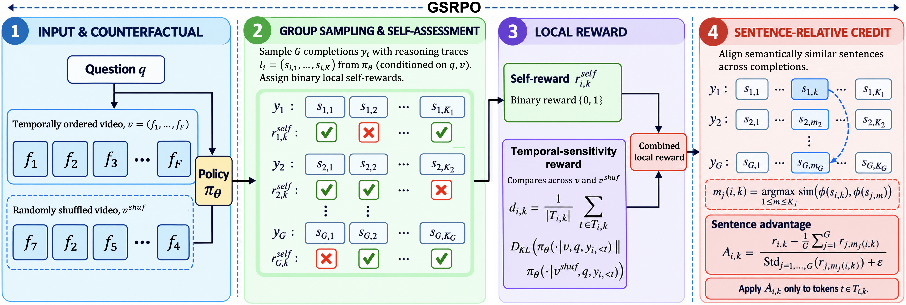
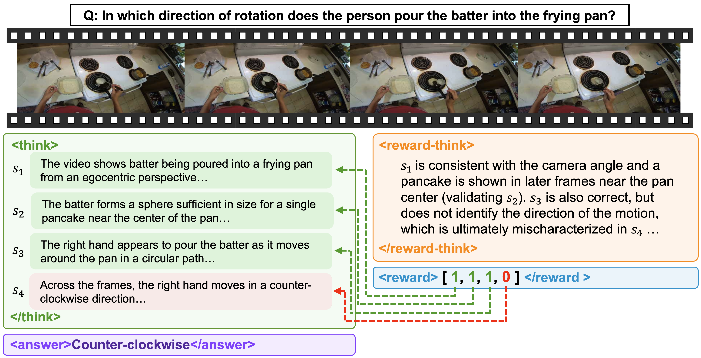
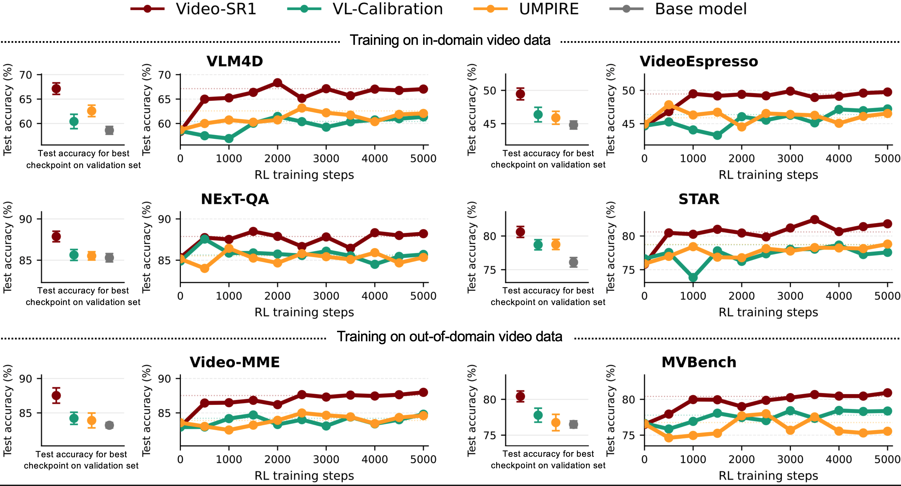
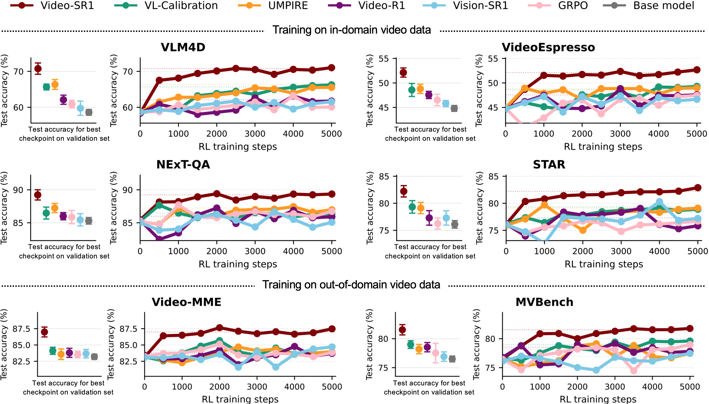
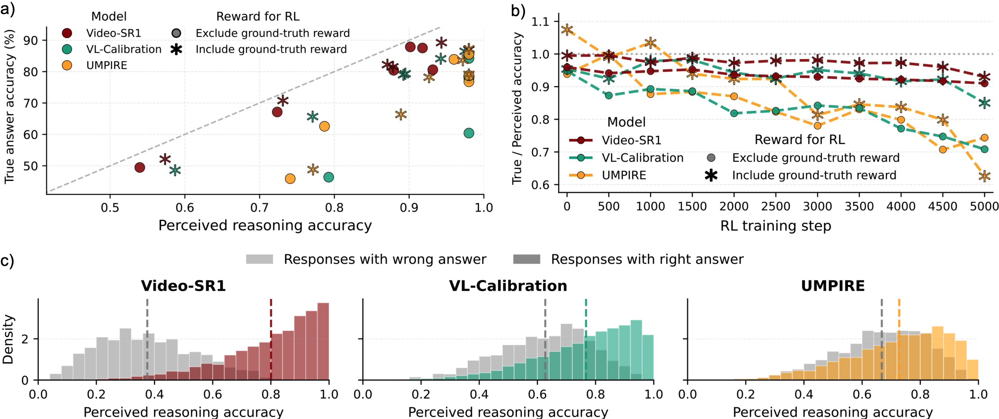
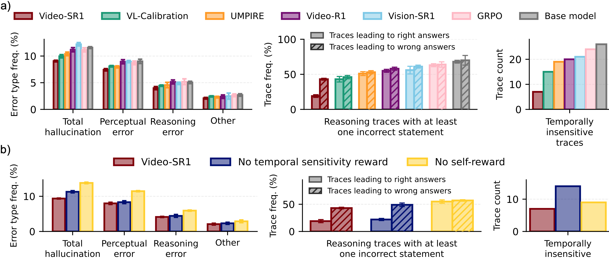

We introduce Video-SR1, a self-rewarding framework for video-language reasoning that provides dense supervision without training a separate value model. Its core algorithm, Group and Sentence Relative Policy Optimization (GSRPO), leverages the policy to assess the local correctness of each sentence in the reasoning trace with respect to the video, question, and preceding trace. Instead of assigning one reward per response, GSRPO compares semantically corresponding sentences across the group, normalizes their self-rewards locally, and applies each advantage only to that sentence’s tokens. Thus, GSRPO preserves the critic-free, group-relative structure of GRPO, while transforming one sparse learning signal per response into a sequence of localized learning signals.
Finally, during RL, we complement the self-reward with a temporal-sensitivity reward. For each video, we shuffle its frames and measure how much the policy's sentence-level reasoning changes relative to the original video. We reward sensitivity up to a fixed margin, discouraging reasoning that is invariant to temporal order without encouraging arbitrary instability. Together, the temporal-sensitivity reward encourages reasoning that responds to the video's spatiotemporal structure, while the local self-rewards ensure that this sensitivity remains accurate and grounded in the visual evidence.

After producing its reasoning trace, Video-SR1 reflects on each sentence in that trace. For every sentence, it evaluates whether the statement is supported by the video, temporally consistent with the observed events, logically consistent with the preceding reasoning, and relevant to the query. The model then predicts a binary sentence reward.

We first exclude all ground-truth signal about final-answer correctness during RL. GRPO, Video-R1, and Vision-SR1 are therefore omitted because they require answer rewards. For benchmarks with training splits (VLM4D, VideoEspresso, NExT-QA, and STAR), all models use half of the in-domain training examples for warm-starting and the remaining half for RL. For Video-SR1, the warm-start data is converted into the synthetic self-assessment examples. VL-Calibration and UMPIRE instead receive standard question--answer supervised fine-tuning. RL then operates on the held-out training videos without access to their ground-truth answers. MVBench and Video-MME do not provide training splits and are therefore used to test cross-domain transfer, where all training examples come from combining all the other training datasets. During RL, all models are limited to G=16 responses with the same token budgets.
Video-SR1 improves accuracy, sample efficiency, and cross-domain transfer using only self-derived rewards.
Video-SR1 shows consistent gains over all baselines across all six benchmarks. On the in-domain evaluations, Video-SR1 reaches 67.1% on VLM4D, 49.5% on VideoEspresso, 87.9% on NExT-QA, and 80.6% on STAR, improving over the strongest baseline by 4.5, 3.1, 2.3, and 1.9 percentage points, respectively. The gains persist under cross-domain transfer: Video-SR1 reaches 86.8% on Video-MME-Short and 80.4% on MVBench, outperforming the strongest baseline by 3.5 and 2.6 points. This cross-domain transfer provides evidence that Video-SR1's sentence-level self-rewarding and temporal grounding improve generalization beyond the post-training distribution.

We next restore the sparse ground-truth answer reward. This enables comparison with methods that depend on this reward (GRPO, Video-R1, and Vision-SR1), while testing whether Video-SR1 remains strong when final-answer supervision is already available.
Video-SR1 is boosted by the sparse ground-truth rewards, further outperforming all baselines on accuracy, sample efficiency, and cross-domain transfer.
Video-SR1 again achieves the highest accuracy across all six benchmarks. It reaches 70.8% on VLM4D, 52.1% on VideoEspresso, 89.2% on NExT-QA, and 82.2% on STAR, exceeding the strongest baseline on each benchmark by 4.5, 3.3, 2.0, and 2.9 percentage points, respectively. The same advantage transfers out of domain: Video-SR1 obtains 87.2% on Video-MME-Short and 81.5% on MVBench, gains of 3.1 and 2.5 points over the strongest competing method. Across all six benchmarks, Video-SR1 significantly improves on the strongest baseline. Its learning curves also show faster improvement, surpassing the best final baseline performance after substantially fewer RL steps. These results indicate that sparse and dense rewards resolve different parts of the credit-assignment problem: the answer reward identifies whether the trajectory ultimately succeeds, while GSRPO determines which intermediate claims within that trajectory should be reinforced or suppressed.

We test whether the model's own estimate of reasoning quality remains calibrated to actual task success during RL. We define perceived reasoning accuracy as the mean sentence-level self-reward assigned to a generated trace and compare it with true final-answer accuracy on each benchmark.
Video-SR1's perceived reasoning quality tracks true task performance more closely than competing self-derived rewards.
As shown in part (a) below, the gap between perceived and true accuracy is consistently smaller for Video-SR1 across benchmarks. In contrast, VL-Calibration and UMPIRE show more vulnerability to reward-hacking behavior, where high confidence is assigned to reasoning traces even when final-answer accuracy is substantially lower. This distinction is important for self-rewarded RL: a reward that becomes increasingly detached from true correctness can reinforce precisely the behaviors that make the model appear confident without making it more accurate. However, we see improvement with VL-Calibration when ground-truth rewards are included, as the method explicitly uses these rewards to improve the calibration of the self-derived confidence estimates.
% When ground-truth answer rewards are added, VL-Calibration becomes substantially better calibrated, consistent with external correctness supervision helping constrain its confidence estimates;
Nevertheless, Video-SR1 retains the closest correspondence between perceived reasoning quality and actual task success.
Part (b) examines how this relationship evolves during optimization. Video-SR1's ratio of true accuracy to perceived reasoning accuracy remains nearly constant throughout RL, whereas the ratio declines for the competing self-derived rewards. The latter pattern indicates growing overconfidence: the reward signal continues to increase even when true task performance does not improve proportionally. In contrast, the relative stability of Video-SR1 suggests that optimizing its self-reward does not rapidly decouple the reward from the behavior it is intended to measure. This is especially important in the setting without ground-truth answer rewards, where there is otherwise no external signal during RL to correct reward miscalibration. Including the ground-truth reward again substantially improves VL-Calibration, but Video-SR1 remains the most stable.
Finally, part (c) compares perceived reasoning accuracy for responses with correct versus incorrect final answers. Video-SR1 assigns substantially different self-rewards to successful and unsuccessful traces, while the distributions for baselines overlap strongly. This suggests Video-SR1's local assessments are more discriminative of whether the underlying reasoning leads to a correct answer. Together, these results indicate that Video-SR1's self-rewards provide a substantially more stable and informative training signal than baselines.

We next test whether the improvements in accuracy correspond to improvements in the reasoning traces themselves. We manually inspect 100 randomly sampled responses per model and benchmark and categorize failures as total hallucination, perceptual error, reasoning error, or other. Part (a) of the below figure shows that Video-SR1 reduces all error types relative to the baselines. Video-SR1 lowers the frequency of all major error categories. This is consistent with the intended division of labor between its two reward components: the sentence-level self-reward penalizes unsupported local claims, while the temporal-sensitivity objective encourages the policy to condition its reasoning on the ordered visual evidence rather than on language priors or static appearance alone.
A particularly revealing failure mode appears when the final answer is correct despite flawed intermediate reasoning. As shown in the middle panel of part (a) of the figure below, such traces remain common for the baselines: a response can arrive at the correct answer while still containing one or more incorrect intermediate statements. Under a sparse answer-level reward, these errors are invisible to the optimizer because the entire trajectory receives positive credit. Video-SR1 substantially reduces these ``right answer, wrong reasoning'' cases. This directly reflects the advantage of sentence-local credit assignment: an accidentally correct final prediction cannot cause every preceding statement to be reinforced. The result also agrees with the calibration analysis above, where Video-SR1's perceived reasoning quality more closely tracks true task success.
Finally, we evaluate whether the reasoning actually depends on temporal order by shuffling the video frames for 50 randomly selected examples and checking whether the model remains inappropriately unchanged. As shown in the right panel of part (a) below, Video-SR1 is temporally insensitive on only about 7/50 examples, substantially fewer than all baselines. This provides complementary evidence that the temporal-sensitivity reward is changing what information the model relies on: the model is less likely to produce the same reasoning when the event order in the visual input has been disrupted.
Together, these analyses support two complementary mechanisms behind Video-SR1's gains. The temporal-sensitivity reward encourages the policy to rely on the video's ordered spatiotemporal evidence, while the local self-rewards ensure that this temporally responsive reasoning remains accurate and grounded.
